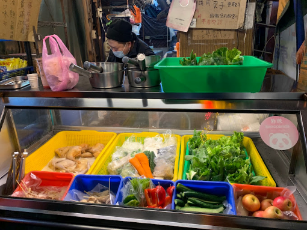

晚餐類
G哥鹽水雞
東海唯一會吃的鹹水雞和風檸檬口味好吃蔬菜選擇性多餅!
- 營業時間：17:00PM-00:00AM．不定時公休
- 地 址：台中市龍井區新興路13號 
麻入口
一到冬天不少人都愛吃麻麻辣辣的鴨血、臭豆腐，但往往家裡有小孩的就無法過癮地享用，想不到這家麻入口聽到大家的心聲了! 將湯頭以數十種中藥材去熬煮成不辣的湯頭，並提供主餐(鴨血、臭豆腐、板豆腐、蘿蔔、排骨）讓客人裝到滿只要$79，麻度、辣度再依照個人喜歡去加入，就連小孩也可以輕鬆吃囉!!!
- 營業時間：15:00AM–21:00PM．不定時公休
- 地 址：臺中市台中市龍井區藝術街23號
- 電 話：04 2631 0563

牙米熱狗東海總店
一口咬開，滿滿的莫札瑞拉起司根本就要爆漿出來了啊！滿口的起司超滿足，最底下的德式香腸的肉香也很不錯；搭配上炸得酥脆的外皮，以及富有顆粒口感的砂糖，真的是好有飽足感的散步美食！
- 營業時間：15:00AM–20:00PM 週三週四公休
- 地 址：台中市龍井區新興路1巷2號
- 電話：0901 289 906

蓮心冰雞爪凍
台中老字號知名排隊小吃，團購美食名店的東海蓮心冰雞爪凍，主打冷滷味料理，必吃招牌雞爪凍，獨家秘方釀造的醬油，在口中保留了滷汁香，雞爪晶瑩剔透，輕輕吮吸就骨肉分離，不死鹹又香脆涮嘴開胃，東海雞腳凍保存期限為冷藏四天，離開冰箱不可超過六小時，夏天還要份冰冰涼涼的蓮心冰40元。
- 營業時間：10:00AM–22:00PM 不定時公休
- 地 址：台中市龍井區新興路1巷1號1之1號
- 電話：04 2632 0182

東海無人拉麵
店內提供超過20種韓國境內版拉麵、韓式配料無限量供應，其中包含韓式魚板、年糕、泡菜及新鮮蔬菜等，最低只要89元，另也可以加購雞肉與雞蛋，創造屬於自己的獨特拉麵。
- 營業時間：24小時營業
- 地 址：台中市龍井區台灣大道五段3巷62弄47號

Copyright ©賴國峰 All Rights Reserved.